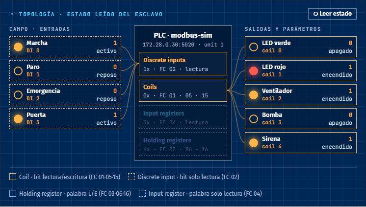
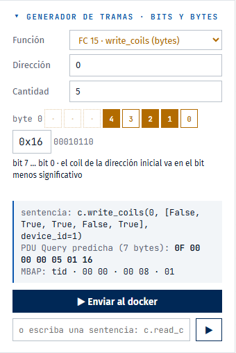
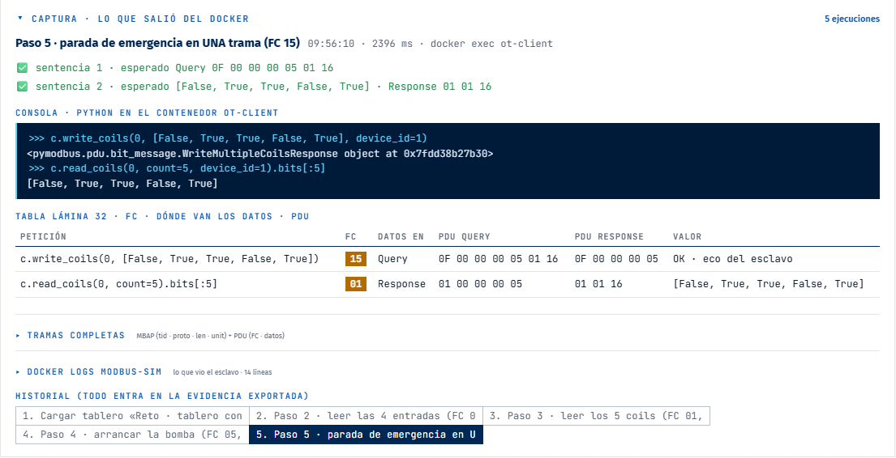
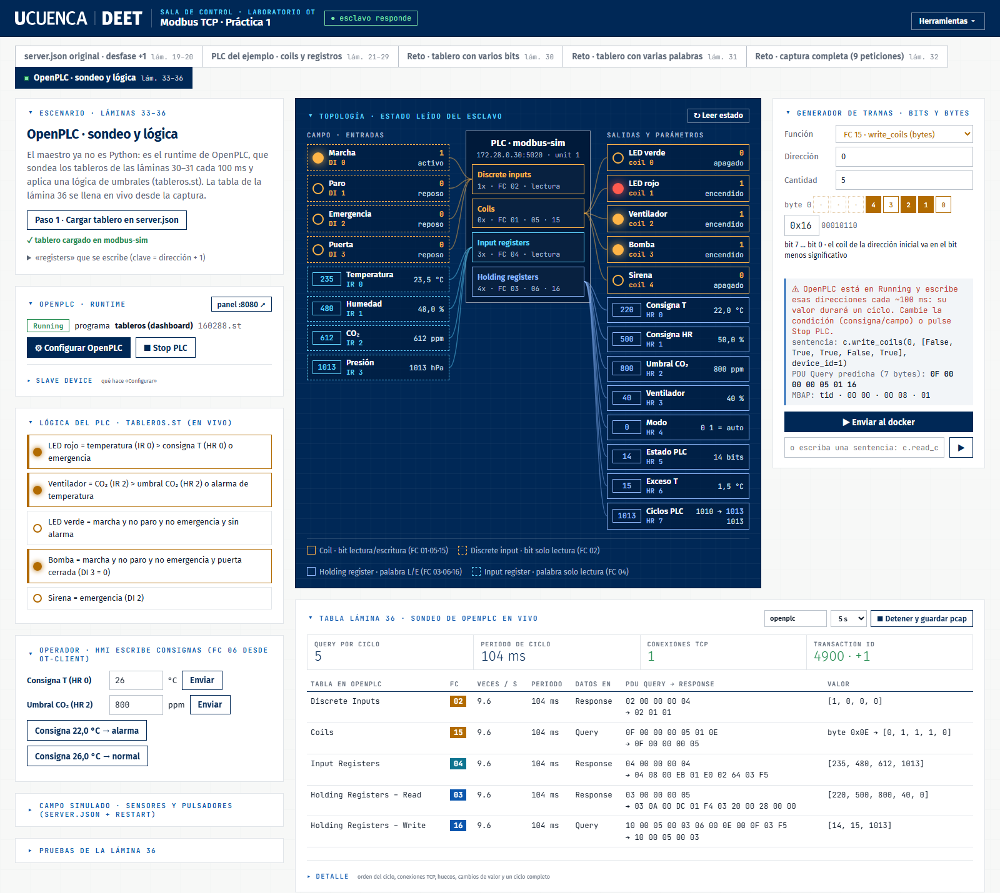
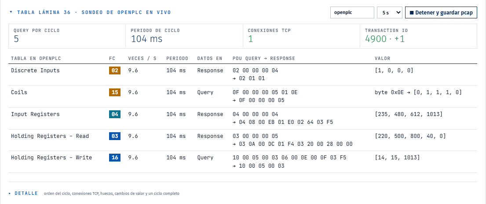
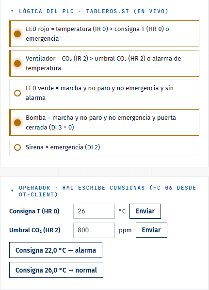

Dos formas de arrancarlo
A · Junto con el laboratorio (recomendada)
El dashboard es un servicio más de Docker y arranca solo cada vez que arranca Docker. Se suma al compose del laboratorio con un segundo -f, sin modificarlo.
# macOS / WSL (desde la carpeta ot-lab) docker compose -f docker-compose.yml \ -f docker-compose.dashboard.yml up -d --build # Windows (PowerShell) docker compose -f docker-compose.windows.yml ` -f docker-compose.dashboard.yml up -d --build
Abrir http://localhost:8000.
B · En el PC, sin contenedor
Útil para desarrollar o para usar el botón Abrir Wireshark en vivo, que necesita abrir una ventana en el escritorio.
# requiere Python 3 (solo biblioteca estándar) y el CLI de docker
cd ot-lab/dashboard
python app.py
Usa el mismo puerto 8000: detén el contenedor antes (docker stop ot-dashboard).
ot-client (python:3.12-slim + pymodbus 3.12.1) en la red ot-lab_ot-lab,
el mismo cliente de la lámina 22. Para capturar tráfico descarga nicolaka/netshoot (≈ 400 MB) la primera vez que se usa.Quitarlo
docker compose -f docker-compose.yml -f docker-compose.dashboard.yml rm -sf dashboard
Qué hace cada clic
- Ejecuta la sentencia de pymodbus con
docker execenot-client, el maestro de la lámina 22. Guarda la consola>>>y las tramas reales TX/RX (MBAP + PDU). - Lee
docker logs modbus-simdesde ese instante: lo que vio el esclavo (recv/send). - Lee el estado de las 4 tablas dentro de
modbus-simpor loopback, así esas lecturas no aparecen en la captura, y dibuja la topología. - Compara la predicción de la lámina (PDU y valor) con lo capturado: ✅ o ❌.
Las capturas de red (Wireshark en vivo, Grabar pcap, tabla de la lámina 36) usan tcpdump en el puente de la red ot-lab
y no en el eth0 de un contenedor. Así sobreviven a «Cargar tablero», que reinicia modbus-sim.
Escenarios, topología, generador y captura
Cada pestaña es una parte de la práctica. «Paso 1 · Cargar tablero» escribe ese tablero en modbus/server.json
(clave = dirección + 1, lámina 20) y reinicia el simulador, como pide cada reto.
| Láminas | Pestaña | Qué se practica |
|---|---|---|
| 19–20 | server.json original · desfase +1 | Por qué la clave «0» es inalcanzable: read_holding_registers(0, 3) → [25, 72, 0] |
| 21–29 | PLC del ejemplo | Coils (FC 01/05/15), pulsador (FC 02), medidas (FC 04), consignas (FC 03/06/16); reto FC 15 con byte 0x03 |
| 30 | Reto · varios bits | Leer 4 entradas (byte 0x09), arrancar la bomba, parada de emergencia en una trama (byte 0x16) |
| 31 | Reto · varias palabras | Escalas ×10, «modo verano» en una FC 16 (PDU de 16 bytes), valores fuera de rango, desborde a HR 7 |
| 32 | Captura completa | Las 9 peticiones; la tabla de la lámina 32 (FC, dónde van los datos, PDU, valor) se llena sola |
| 33–36 | OpenPLC · sondeo y lógica | OpenPLC como maestro cíclico, lógica de umbrales y tabla de la lámina 36 en vivo |


0x16). Predice la PDU antes de enviar.Colores: coil, un bit de lectura/escritura · discrete input, un bit de solo lectura · holding register, una palabra de lectura/escritura · input register, una palabra de solo lectura.

El maestro deja de ser Python
En esta pestaña OpenPLC sondea los tableros de las láminas 30–31 cada 100 ms y aplica una lógica de umbrales
(openplc/tableros.st). El botón Configurar OpenPLC hace los pasos de la lámina 34 en el panel web:



Lógica de tableros.st
- LED rojo = temperatura (IR 0) > consigna T (HR 0), o emergencia
- Ventilador = CO₂ (IR 2) > umbral CO₂ (HR 2), o alarma de temperatura
- LED verde = marcha y no paro y no emergencia y sin alarma · Bomba = marcha y no paro y no emergencia y puerta cerrada · Sirena = emergencia
- El PLC escribe su estado en HR 5–7 (estado, exceso de temperatura, contador de ciclos) y no pisa las consignas HR 0–4.
write_coil desde Python dura un ciclo (~100 ms):
OpenPLC vuelve a escribir los coils con su FC 15. Para encender el LED rojo, cambie la condición (consigna o campo) o pulse Stop PLC.
Las pestañas de Python muestran este aviso.Qué se puede cambiar
| Tabla | Cómo | Efecto |
|---|---|---|
| HR 0–4 (consignas) | FC 06/16 desde el generador o el panel «Operador» | Se mantiene; cambia la decisión del PLC |
| IR (sensores) y DI (pulsadores) | Panel «Campo simulado»: server.json + restart | Modbus no tiene función para escribirlas: solo lectura |
| Coils 0–4 y HR 5–7 | — | Las escribe el PLC en cada ciclo |
«Detener modbus-sim 5 s» responde a la pregunta de la lámina 36: aparece un hueco en el sondeo, OpenPLC abre una conexión TCP nueva al volver y el TID sigue sin reiniciarse.
Evidencia
- Herramientas → Exportar evidencia .md: todo el historial en Markdown (consola, tablas de las láminas 32 y 36, tramas, log del esclavo, estado). Listo para el informe.
- Herramientas → Grabar pcap: guarda
ot-lab/captures/<nombre>.pcapng(por ejemplotableros.pcapngde la lámina 32), para abrir en Wireshark. - Tabla de la lámina 36 → Detener y guardar pcap:
captures/openplc.pcapng. - Wireshark en vivo (lámina 25): con el dashboard en el PC, abre Wireshark leyendo la tubería. En el contenedor, el botón devuelve el comando para WSL:
docker run --rm --net host nicolaka/netshoot tcpdump -i br-<id de la red ot-lab> -U -w - "tcp port 5020" \ | wireshark -k -i - -o mbtcp.tcp.port:5020
Cómo se integra con el laboratorio
- No modifica
docker-compose.yml,docker-compose.windows.ymlni ningún servicio. Todo está endashboard/y endocker-compose.dashboard.yml, que se suma con-f. - Arranca con Docker:
restart: unless-stopped, igual que el resto. - No crea redes ni ocupa IPs de 172.28.0.0/24: usa
network_mode: bridgey trabaja por el socket de Docker. - Solo local: se publica en
127.0.0.1:8000. El puerto se cambia conDASHBOARD_PORT=8001. - Solo escribe en
modbus/server.json(al cargar un tablero, con LF y copiaserver.json.bakla primera vez) y encaptures/. En OpenPLC, «Configurar» reemplaza el programa activo y los Slave Devices que apuntan a172.28.0.30:5020.
/var/run/docker.sock (control total de Docker) y su API ejecuta Python dentro de ot-client.
Es una herramienta de laboratorio: no lo publique fuera de 127.0.0.1.Problemas conocidos
| Síntoma | Causa y solución |
|---|---|
pcap_loop: The interface disappeared en Wireshark | La captura estaba pegada a --net container:modbus-sim y «Cargar tablero» lo reinició. Capture en el puente (--net host … -i br-…), como hace el dashboard. |
| El LED se enciende y se apaga solo | OpenPLC en Running escribe los coils cada 100 ms. Cambie la consigna o pulse Stop PLC. |
modbus-sim/mosquitto en Exited (127) tras reiniciar el PC | El laboratorio se levantó desde WSL y monta rutas /mnt/c/…: arranque Ubuntu (wsl -d Ubuntu) y docker start modbus-sim mosquitto. |
| Wireshark no abre y Docker deja de responder | Quedó un ot-ws sin Wireshark al otro lado. El dashboard lo detecta y lo borra; a mano: docker rm -f ot-ws. |
localhost:8080 muestra otra página | En Windows el puerto 8080 lo comparten varios procesos (p. ej. ApplicationWebServer.exe). El dashboard entra al panel de OpenPLC desde la red Docker. |
Estructura
ot-lab/ ├── docker-compose.dashboard.yml # servicio opcional; se suma con -f └── dashboard/ ├── app.py # servidor HTTP (stdlib) + docker exec/logs/run ├── scenarios.py # escenarios de las láminas 19–36: tableros, pasos y predicciones ├── openplc_ctl.py # panel de OpenPLC + captura en vivo y tabla de la lámina 36 ├── index.html # interfaz (identidad DEET) ├── openplc/tableros.st # programa IEC 61131-3 con la lógica de umbrales ├── marca/ # logos oficiales UCUENCA | DEET ├── Dockerfile └── README.md · README.html · docs/img/
Agregar una práctica: añada un diccionario a SCENARIOS en scenarios.py con board, labels y steps
(cada paso con sus sentencias y, si quiere, las predicciones checks). La página se arma sola.